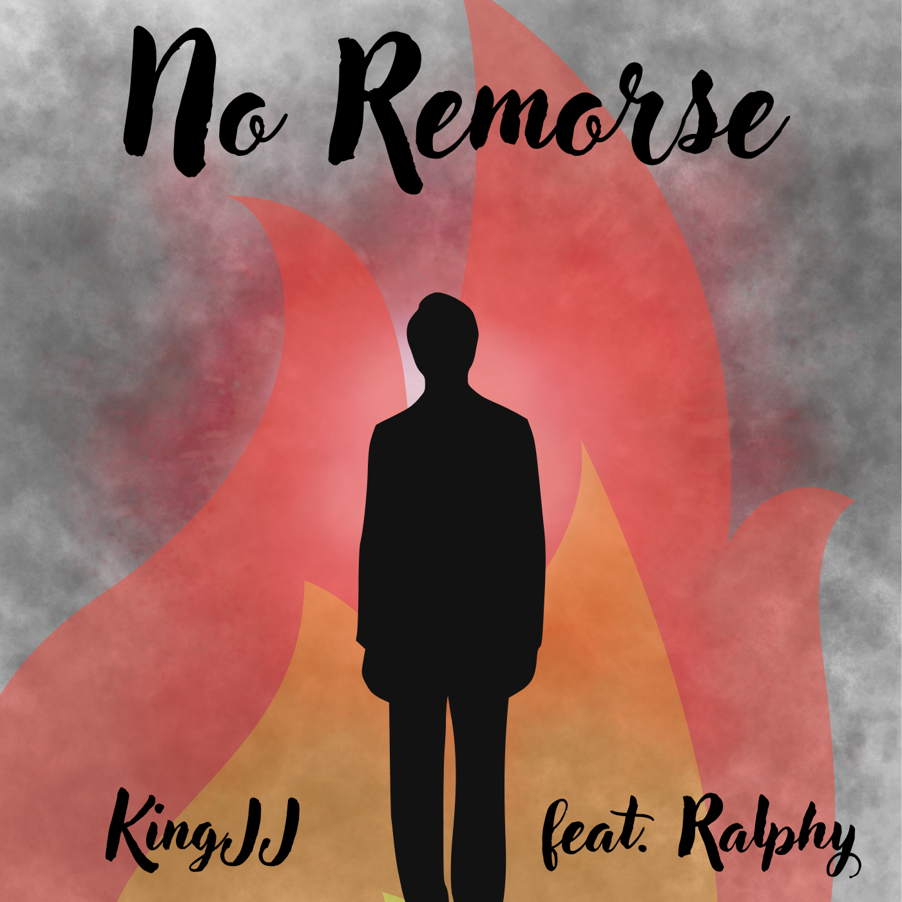

Lyrics
No Remorse
KingJJ feat. Ralphy • July 2025
[Intro: Ralphy] Sometimes I feel I'm drifting away Trying to get your love today (sike!) [Interlude: Ralphy] You guys thought that was going to be depressing Mann just wait And while you listen to this it may not be the greatest thing you've listened to but the best [Verse 1: KingJJ] You thought I was broken? Nah, just cold now Took all that pain, now I’m lettin’ it go loud Used to cry in the dark, now I bark in the flame Same guy you ignored, now remember the name (King!) Every sorry was fake, every promise was dirt (just broken) I gave all I had, now I’m done gettin’ hurt (not jokin') No love in my chest, just scars and fuel (yeah!) They laughed at my dreams, now I’m breakin’ the rules (let's go) Tired of bein' humble, tired of the silence I’m the storm they made with their lies and the violence JJ ain’t cryin’, nah, JJ evolved No remorse in my blood, I want it resolved Spit truth like venom, no peace, no pause I’m the fire in the booth, I’m the rebel with cause You pushed me too far, now I’m takin’ the lead Turn my sadness to rage, now I’m built to bleed [Verse 2: Ralphy] People laugh at me for being different I'm talking about color and inference I'm not so mad to make... but I am mad enough to make... She said Yes I understand I was scared And I wanted people to like me Because I needed people to want me And when you treated me good I ran away and I'm sorry So you're sorry for, me, treating you good but then went after my best friend And then said it was all good I used you for him People like this I can't forgive saying It's okay but lying behind a screen that they feel safe in Not caring about who they might offend My bad, people don't have a good side After all, it's all about our feelings Dying inside to get others appreciation to feel good Don't worry about the evil that is spilt into bad eggs Inside we all have cracking points that when tempered might explode Everything and anyone has a point to where you might snap [Verse 3: KingJJ] I look in the mirror, I’m the fraud I fear I talk bold, but I fold, can’t stand me near Fake strength, fake pride, fake grind, fake gear Can’t blame y’all, 'cause I been broke for years Say I’m real but that's out of my ass Held back every time that I shoulda swung Let ‘em lie to my face, then I play dumb How the hell do I survive when I let ‘em run Broke my word more times than I breathed Said I’d rise, but I fall on repeat Wanna lead, but I quit on myself I’m the chain on my neck, I’m the lock, no key So nah, I don’t want your peace I want war, n' want smoke, want... on the beat I want... n' want... I want y’all left weak I want silence after I... No love left, just war on sight No calm talk, just rage and spite No hold back, just for dread, now bite I got nothing to lose, just wrongs to right